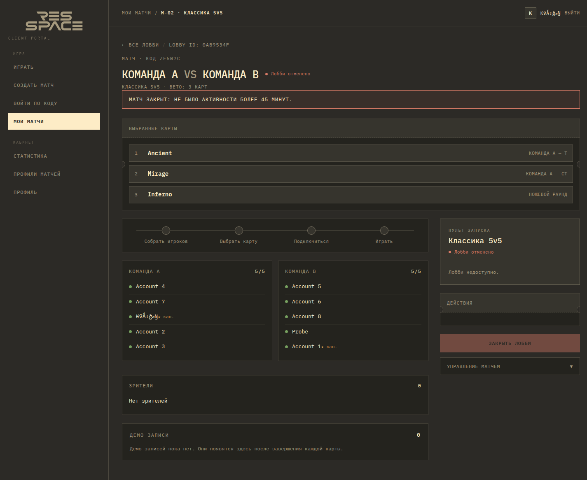
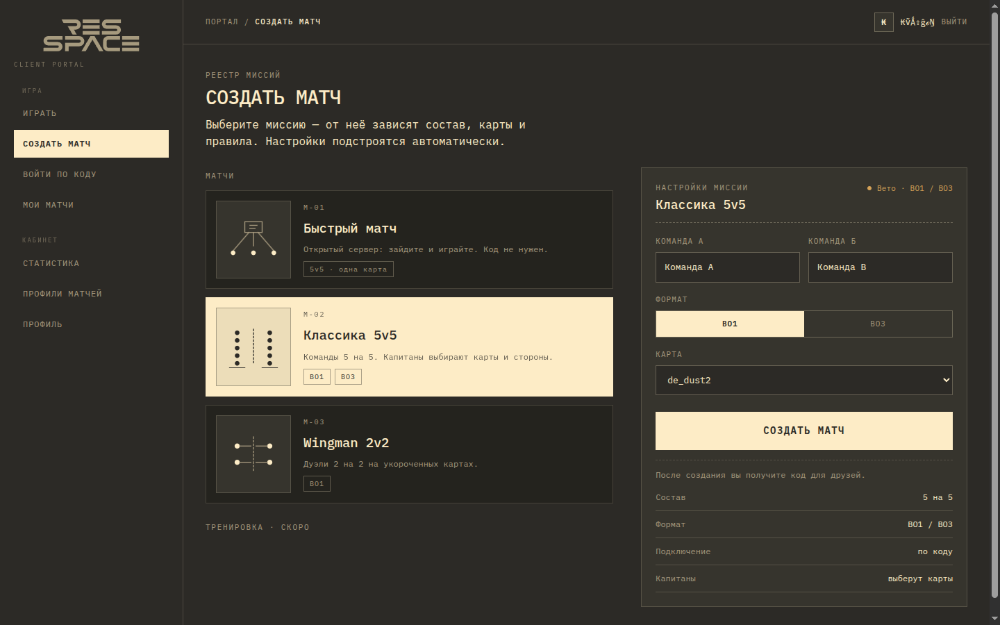
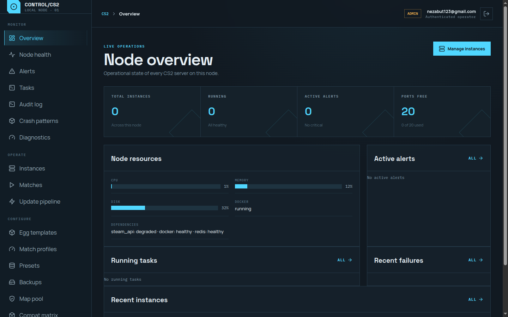
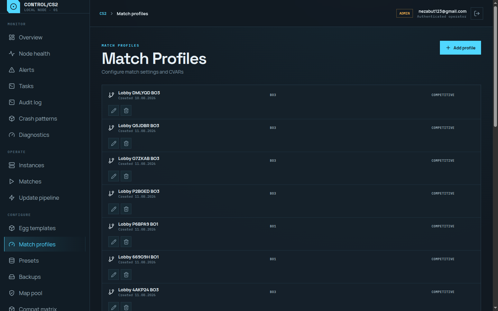

CyberRES
Игровой портал и админка для клуба. Игрок создаёт лобби, приглашает друзей, проходит veto и получает сервер. Администратор видит всё это в одном месте.
Игрок видит всё, что нужно для матча
Лобби, состав, готовность команды и состояние сервера находятся на одном экране. Не нужно пересылать настройки в чат или искать свободный сервер вручную.



Один интерфейс для трёх задач
CyberRES разделяет действия игрока, организатора и команды клуба. Каждый видит только то, что нужно для его работы.
Создать и сыграть
Выбрать формат и карту, создать лобби, пригласить друзей по коду и подключиться к готовому серверу.
- Лобби и составы
- BO1 / BO3
- Статус матча и счёт
Провести турнир
Создать сетку, собрать участников, назначить правила и следить за матчами до финала.
- 8, 16 или 32 участника
- Команды и капитаны
- Veto и автоматическая сетка
Держать всё под контролем
Управлять серверами, матчами и ошибками из админки, не открывая базу или панель хостинга.
- Пул и состояние серверов
- Матчи и лобби
- Журнал действий и алёрты
Что можно делать в CyberRES
От запуска обычного матча до проведения турнира на весь вечер.
Быстрый запуск
Игрок выбирает режим, карту и правила. Система создаёт лобби, выдаёт код приглашения и резервирует сервер.
Турниры
Организатор задаёт количество слотов и набор карт. Участники входят по коду, а сетка сама переводит победителей в следующий раунд.
Veto и управление матчем
Ban, pick, side pick, captain flow, пауза и продолжение матча. Настройки передаются в MatchZy до старта игры.
Выделение сервера
Свободный сервер назначается автоматически. После матча он освобождается и возвращается в пул.
История матчей
Результаты, счёт, статистика игроков и demo-файлы остаются доступны после завершения игры.
Локальная и публичная игра
Поддерживаются матчи внутри клуба и публичные серверы с отдельной адресацией и токенами.
Рабочее место администратора
Админка показывает, что происходит сейчас, и даёт инструменты для ежедневной работы клуба.
Обзор серверов
Свободные, прогретые, занятые и отключённые серверы видны сразу. Панель показывает состояние нод и доступность Pterodactyl.
Управление инстансами
Запустить, остановить, перезапустить или освободить игровой сервер можно из одного интерфейса.
Матчи, лобби и турниры
Администратор находит нужное событие, открывает детали, видит связанные задачи и проверяет состояние матча.
Диагностика
Алёрты, ошибки запуска, crash patterns, audit log, backups и GSLT-токены собраны в отдельных разделах админки.


Свой формат без доработки кода
Профиль матча хранит правила игры. Создайте его один раз, и команда сможет выбирать его в лобби или турнире.
В профиле задаются серия, карты, порядок veto и игровые параметры. Сейчас в production уже есть профили 1v1 Aim BO1/BO3, Competitive BO1/BO3 и Wingman BO1/BO3.
От создания лобби до результата
Расскажу, как спроектировать игровой продукт под ваш процесс.